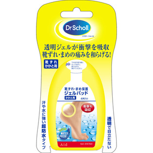

返回列表
产品名称：ドクター・ショール 靴ずれ・まめ保護ジェルパッド かかと用

レキットベンキーザー・ジャパン ドクター・ショール 靴ずれ・まめ保護ジェルパッド かかと用 ４枚入
メーカー レキットベンキーザー・ジャパン
JANコード 4906156400526
商品の特徴
シールド層の追加で保護力アップし歩行時の痛みを和らげるジェルパッドです。優れたクッション性・透明、目立たない・はがれにくい。
成分・分量
用法及び用量